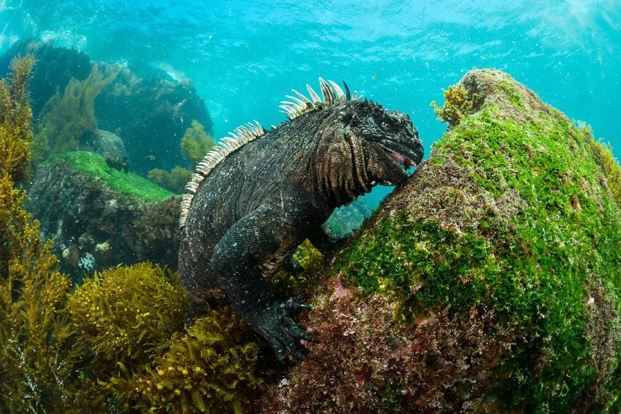

爬行动物 · 动物界
海鬣蜥 Amblyrhynchus cristatus

加拉帕戈斯群岛特有的蜥蜴，是唯一能在海中潜水觅食的蜥蜴，以海藻为食，靠打喷嚏排出体内多余盐分。
- 分类
- 门脊索动物门纲爬行纲目有鳞目科鬣蜥科属海鬣蜥属
- 栖息环境
- 加拉帕戈斯群岛的岩石海岸、潮间带与近岸浅海
- 地理分布
- 厄瓜多尔加拉帕戈斯群岛各主要岛屿
- 保护级别
- IUCN 易危（VU）；非中国原产，在中国无保护级别
物种志
海鬣蜥体长 0.6–1.3 米，体重 0.5–1.5 千克，不同岛屿的个体体型差异很大。它头部较钝，背部有一列锯齿状的棘刺，体色以灰黑、暗绿或红褐色为主，不同岛屿的种群颜色各异；四肢粗壮，趾间有蹼，尾巴侧扁，适合游泳和潜水。
它仅分布于厄瓜多尔的加拉帕戈斯群岛，栖息于岩石海岸，是唯一能在海中觅食的蜥蜴，常潜入浅海啃食海藻，潜水时间可达数十分钟，之后回到岸上晒太阳恢复体温。它用打喷嚏的方式把鼻孔排出的多余盐分喷掉。每年 1–3 月繁殖，雌蜥在沙地中产卵 1–6 枚，孵化期约 3 个月。由于厄尔尼诺现象和外来物种威胁，其种群数量波动较大，被列为易危物种。
形态与习性
- 食性海藻为主，也吃少量海岸植物
- 体长0.6–1.3 m
- 体重约 0.5–1.5 kg
- 繁殖卵生，1–6 枚，孵化约 3 个月
- 活动节律昼行性，潜水后上岸晒太阳
趣味知识
- 海鬣蜥是唯一能在海中潜水觅食的蜥蜴，能啃食海底海藻。
- 它会把体内多余的盐分通过鼻孔排出，再打喷嚏喷掉。
- 不同岛屿的海鬣蜥体型和体色差异明显，是研究适应演化的好材料。